En América un mondae es un helado con jarabe de chocolate y agua de soda.
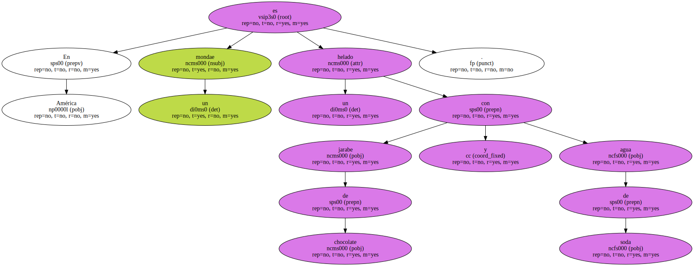Es una palabra que se origina en la que designa al segundo día de la semana , el monday ( por paralelismo con sunday y sundae ).
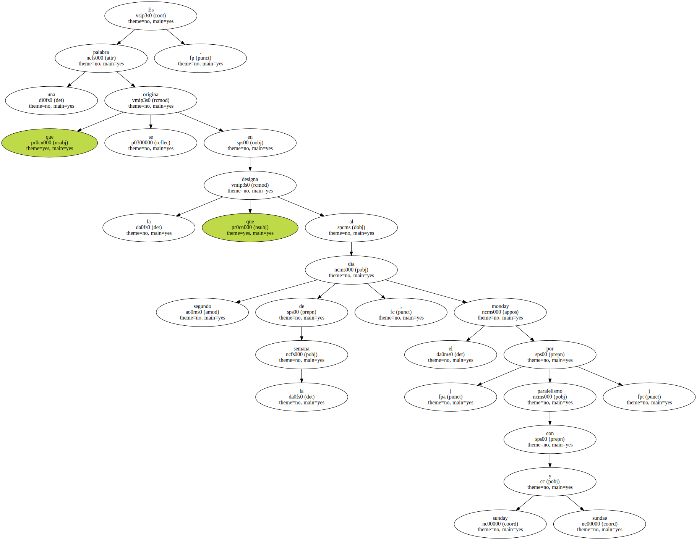El Diccionario Secreto de Camilo José Cela recoge monda y mondá por pija.
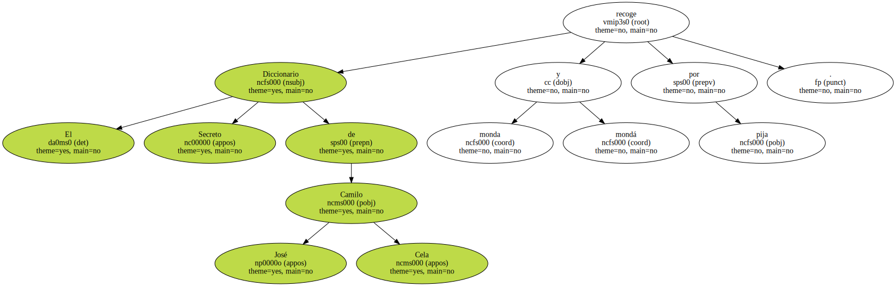En serbocroata , monden significa playboy , tipo de la jet-set.
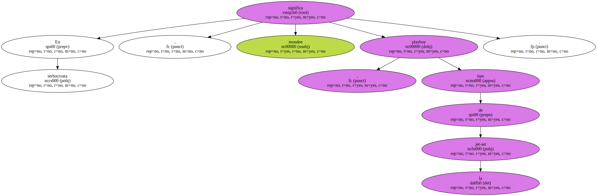En malayo , mondok significa bajo , gordo , rechoncho , rebolludo , lo que no debe complacer demasiado a los delegados de la Ford en Malaisia.
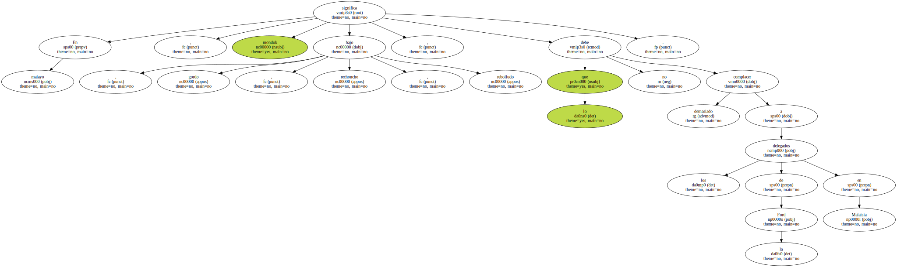En francés , Mon dieu ! es aún una exclamación perfectamente viva y en Portugal hay un río llamado Mondego.
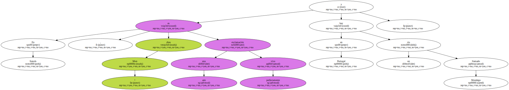Pero ninguna de estas palabras o expresiones es Mondeo exactamente.
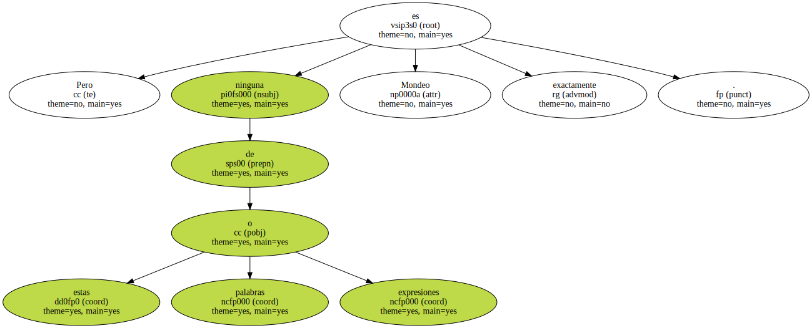Mondeo no significa nada.
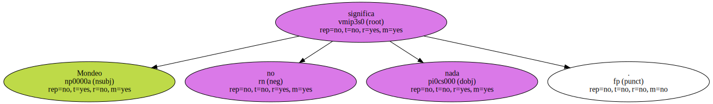Aunque , habiendo miles de idiomas sobre la Tierra , es imposible que Mondeo en uno u otro no signifique algo.

Pero - en cuál de ellos ?.
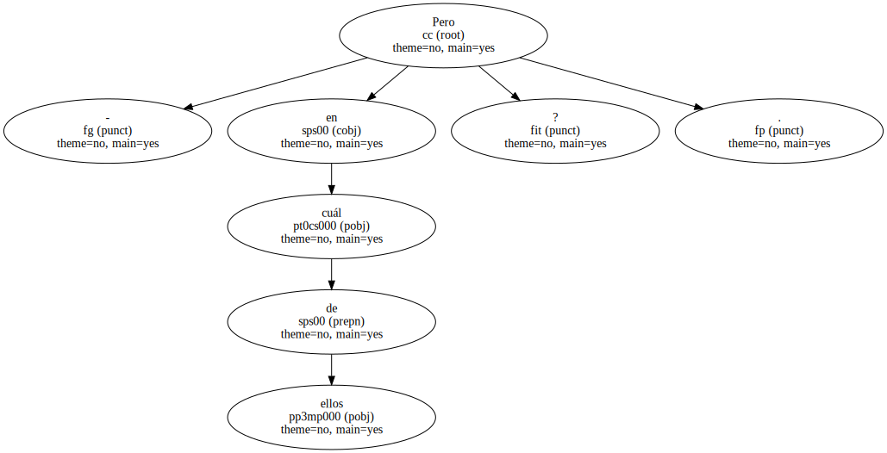Muchos , la primera vez que la vimos fue en Hazañas Bélicas , aquellas historietas en que los americanos eran siempre corpulentos y campechanos , e iban mal afeitados , con un pitillo en la boca y el casco algo tirado hacia atrás.
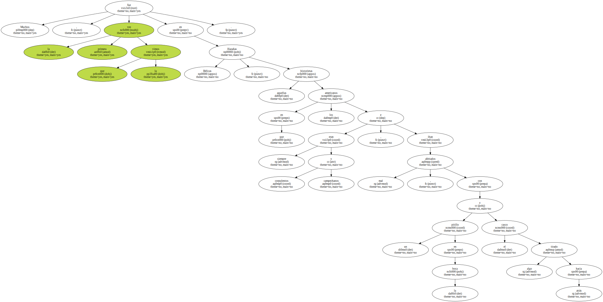Deducíamos que era la bandera japonesa porque la llevaban los japoneses.
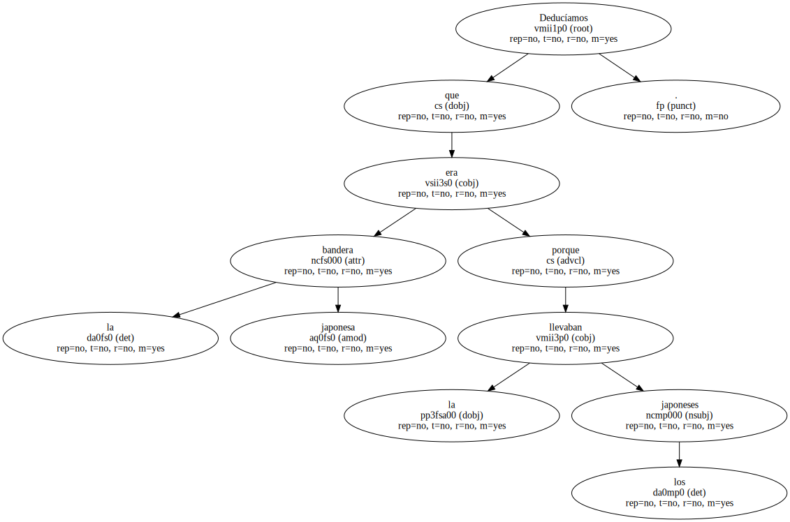